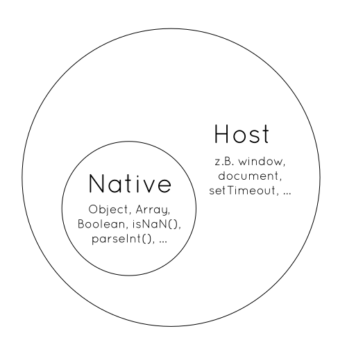
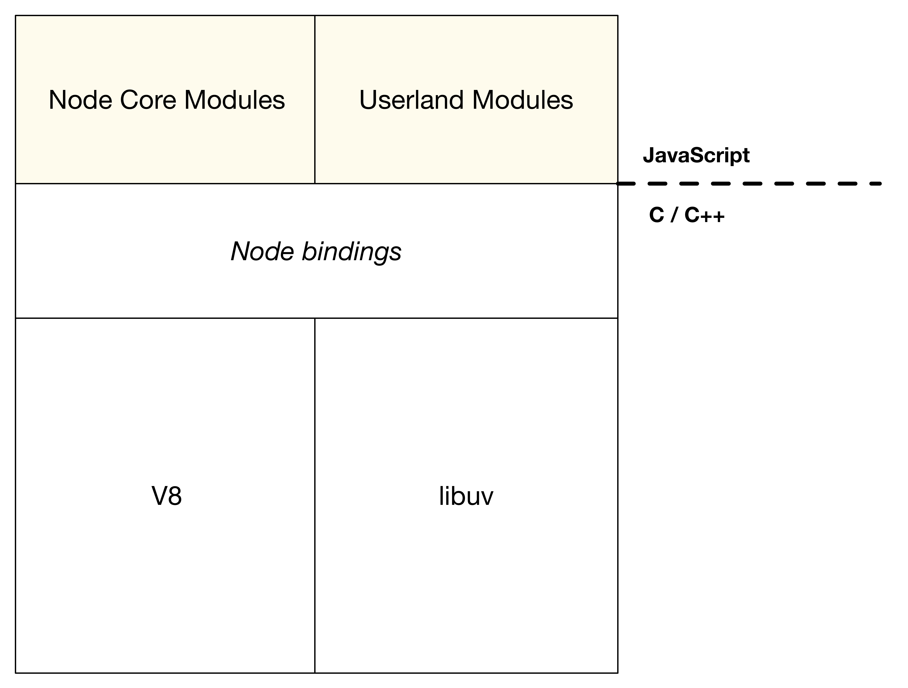
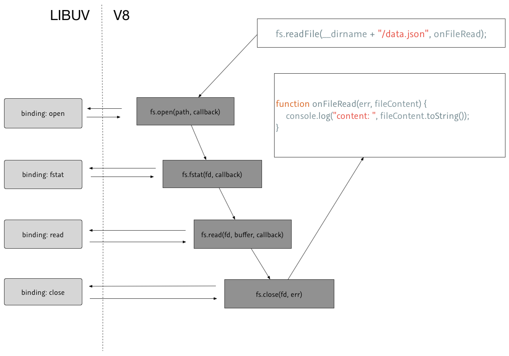
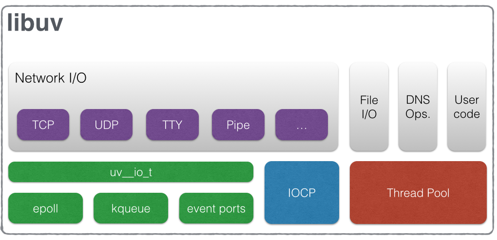
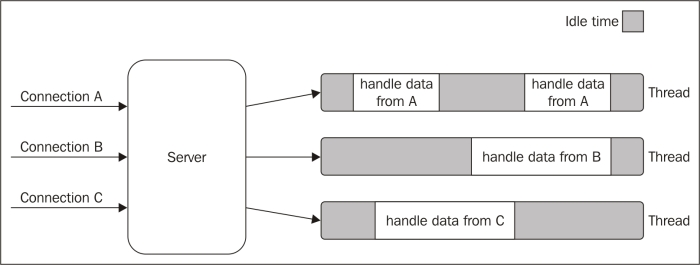
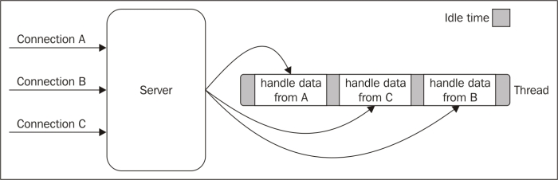

name: cover <img src="assets/img/peerigon.svg" style="width: 30%; margin-top: 7%; margin-bottom: -7%;"> # Node.js Introduction .slide-author[ Peerigon<br> .small[@peerigon / hello@peerigon.com]<br> ] --- layout: true class: center, middle .slide-header-left[ Node.js Introduction ] .slide-header-right[ Nodeschool ] --- ## About us --- # Node.js = JavaScript - Node.js ist serverseitiges JavaScript - JavaScript Skills sind A und O! --- # Good news:<br>JavaScript is easy to learn. --- # Bad news:<br>JavaScript is difficult to understand. --- # Retrospection <img src="assets/img/netscape-screenshot.jpg" style="height: 40vh" /> --- - was developed in 1995 as LiveScript by Netscape - renamed to JavaScript due to marketing reasons - adopted by Microsoft in 1996 as JScript (due to trademarking issues) - standardized as [ECMAScript](http://es5.github.io/) since 1996 --- # JavaScript is simple... - familiar, Java-like syntax - works out-of-the-box - copy & paste - dynamically typed --- # JavaScript is difficult.... - confusing types - unintuitive prototypical inheritance - "grown" APIs (DOM) - many different JS engines --- The main problem is... --- > Java and JavaScript are similar like Car and Carpet are similar. <cite>Someone on the internet</cite> --- | Java | JavaScript | |-------------------| | compiled | interpreted | | static typing | dynamic typing | | class inheritance| prototype based inheritance | --- # Where can I use JavaScript? --- <img src="assets/img/browsers-logos.png" style="height: 20vh"> <img src="assets/img/nodejs-logo.svg" style="height: 10vh"> --- # Browser  --- # Browser ## Native standardized as ECMAScript. ## Host contains APIs like the DOM, which is specified by W3C --- # JavaScript-Engines | Name | Hosts | |-------------------| | SpiderMonkey | <img src="assets/img/firefox-logo.png" style="height: 1em; margin-bottom: -0.2em"> | | v8 | <img src="assets/img/chrome-logo.png" style="height: 1em; margin-bottom: -0.2em"> <img src="assets/img/opera-logo.png" style="height: 1em; margin-bottom: -0.2em"> | | Chakra | <img src="assets/img/ie-logo.png" style="height: 1em; margin-bottom: -0.2em"> | | Nitro | <img src="assets/img/safari-logo.png" style="height: 1em; margin-bottom: -0.2em"> | <cite>http://en.wikipedia.org/wiki/List_of_ECMAScript_engines</cite> --- <img src="assets/img/nodejs-logo.svg" style="width: 50vh"> --- ```javascript var http = require('http'); http.createServer(function (req, res) { res.writeHead(200, {'Content-Type': 'text/plain'}); res.end('Hello World\n'); }).listen(1337, "127.0.0.1"); console.log('Server running at http://127.0.0.1:1337/'); ``` --- - serverside JavaScript - initially released 2009 by Ryan Dahl - maintained by the Node.js Foundation since 2015 - based on V8 JavaScript Engine (Google Chrome) - OpenSource (MIT) --- # Node.js Philosophy --- # Small Core - small set of functions in the standard library - leaving most functions to so-called "userland" (npm) - freedom to experiment - fast iteration in userland - maintainable core --- # Small Modules - Linux Philosophy - "Small is beautiful." - "Make each program do one thing well." --- # Small surface area - minimal API - optimized for a single use case --- # Simplicity and pragmatism >"Simplicity is the ultimate sophistication" (Leonardo Da Vinci) - Keep It Simple, Stupid (KISS) - pragmatic approach --- # Architecture ---  --- - __V8__ JavaScript Engine - __libuv__ OS Abstraction Layer for IO - __bindings__ Glue-Code between C/C++ and JavaScript - __Core-Modules__ Node.js Standard Library containing functions missing in JavaScript like _fs, process, http_ --- # How does Node.js interact with the operation system? --- ## Example: [`fs.exists()`](https://github.com/nodejs/node/blob/master/lib/fs.js#L210) ```javascript fs.exists = function(path, callback) { if (!nullCheck(path, cb)) return; var req = new FSReqWrap(); req.oncomplete = cb; binding.stat(pathModule._makeLong(path), req); function cb(err, stats) { if (callback) callback(err ? false : true); } }; ``` --- ## Bindings: Bridge between JavaScript & C/C++ `binding.stat(pathModule._makeLong(path), req);` ---  --- ## [LibUV](http://docs.libuv.org/en/v1.x/) <img src="assets/img/libuv-logo.png" style="width: 25vh"/> >libuv is a multi-platform support library with a focus on asynchronous I/O. ---  <small>http://docs.libuv.org/en/v1.x/design.html</small> --- - C++ Library - libuv provides an abstracted interface to OS resources - most mainly by Node.js but also by other platforms like Julia, pyuv... --- # Non-Blocking / Asynchronous --- ## Synchron ```javascript var fs = require("fs"); var name; console.log("hi"); //synchronous IO name = fs.readFileSync("myName.txt"); console.log(name); console.log("!"); ``` ```javascript Hi Michael ! ``` --- ## Synchronous - Executed in order - if a function takes time the program "waits" - i.e. IO operations (filesystems, databases) - Thread is blocked but idle --- ## Asynchronous ```javascript var fs = require("fs"); console.log("hi"); //asynchronous IO fs.readFile("myName.txt", function (err, name) { console.log(name); }); console.log("!"); ``` ```shell hi ! michael ``` --- ## Or... ```javascript var fs = require("fs"); console.log("hi"); function onLoaded(err, name) { console.log(name); }); //asynchronous IO fs.readFile("myName.txt", onLoaded); console.log("!"); ``` --- ## What happened here? ```javascript var fs = require("fs"); console.log("hi"); //start loading file in background //-> call onLoaded when you are done fs.readFile("myName.txt", onLoaded); console.log("!"); ``` ```javascript //... next cycle //yeeha! I'm done! onLoad(null, "abc"); ``` --- # Asynchronous - Functions are registered first and executed synchronous - IO intense functions are running in the background - a "callback" function is passed to the background function - the callback gets invoked when the background job finished --- # Why asynchronous? --- # __Goal__: High concurrency --- ## Example: Blocking ```javascript let server = http.createServer((req, res) => { let names = fs.readFileSync("names.json"); //send response res.end(names); }); ``` --- ## Synchronous Request Handler - has to wait for IO before processing the next request - that's why it's called "blocking" - the thread is idle and blocked even though there is work to do --- ## A possible solution for a Web-Server? --- ## 1 Thread per Request  <small>Source: „Node.js Design Patterns.“ </small> --- ## Cons - Threads need memory - context switching takes time - Threads are idle most of the time - _=>_: bad utilization of the server --- # Solution: Asynchronous Request Handler --- ```javascript let server = http.createServer((req, res) => { console.log("incoming request"); fs.readFile("names.json", function(err, names) { //TODO handle err res.end(names); console.log("response sent"); }); }); ``` --- - all requests can be handled - the response takes place as soon as IO finished - the thread is mot blocked anymore - process multiple requests in parallel (within IO layer) ---  <small>Source: „Node.js Design Patterns.“</small> --- <img src="assets/img/event-loop.jpg" style="height: 50vh; margin-top: 5vh; margin-bottom: -7vh;" /> <small>Source: „Node.js Design Patterns.“</small> --- ## Event Loop - Endless loop - takes care of asynchronous calls - registers IO operations (libuv) - calls the `callbacks` when IO finished - dispatches IO operations using a _Thread Pool_ --- # Node.js User Cases? --- >Almost everything. --- ## Why? - Many modules - vibrant Community Community - high concurrency / non blocking - great as "glue code" between programs --- ## Focus: Web Applications - unified programming language: JavaScript - you benefit from your JavaScript skills on front- and backend - Code-Sharing i.e. Validation - _high concurrency_ --- # Further examples --- ## Tooling cli-tools and helpers - bower - yeoman - workshopper --- ## Bundler - webpack - browserify --- ## And... - Hardware interaction - Automation - IoT - ... --- ## Thank you